House Rules at a Glance
Core expectations for all residents, every day
Dining Table & Placemats
Clean up after every meal
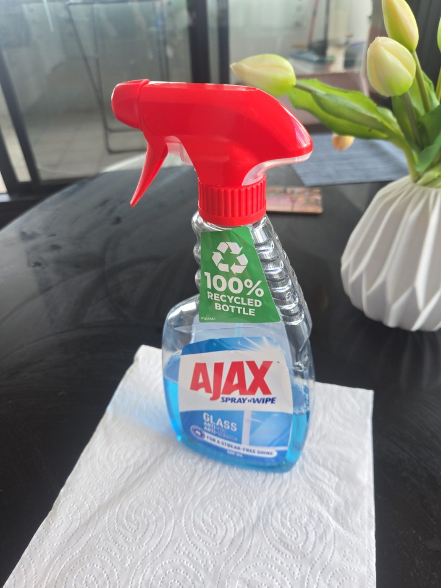
- Spray the table lightly with Ajax Spray & Wipe Glass Cleaner.
- Wipe with paper towel or a clean microfibre cloth.
- Remove all food crumbs, spills and marks.
- Pack placemats away in the cupboard.
- Do not leave plates, cups, food or rubbish on the table.
Balcony Door & Water Ingress
Important – prevents costly timber floor damage


- Only leave the side balcony door open 10–15 cm unless you are actively monitoring it.
- Close the door immediately if rain, wind or storms are possible.
- Never leave balcony doors open overnight or when leaving the apartment.
- If rain water enters, close the door immediately and dry the black threshold and timber floor thoroughly.
- Keep the door tracks and threshold clear of plant debris and leaves.
Laundry: Washing Machine, Dryer & Drying Rack
Instructions, costs and lint filter care
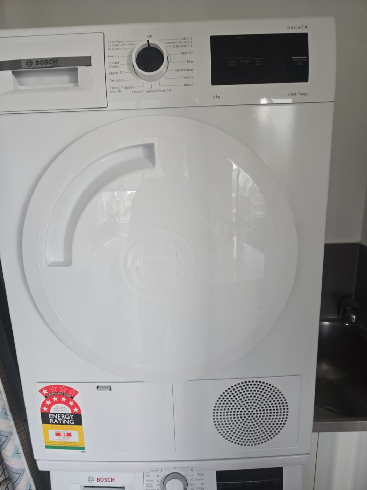
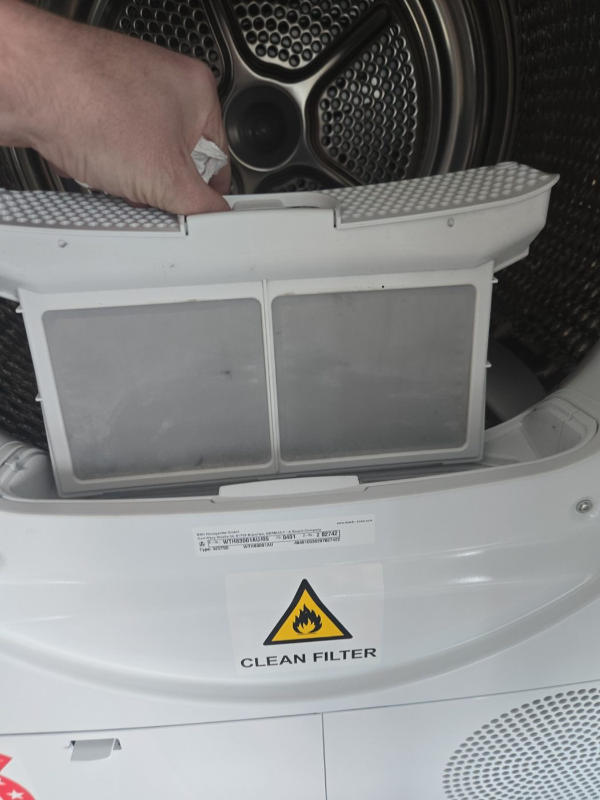
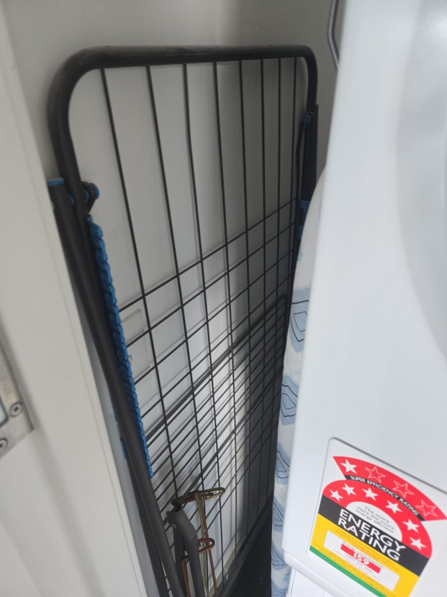
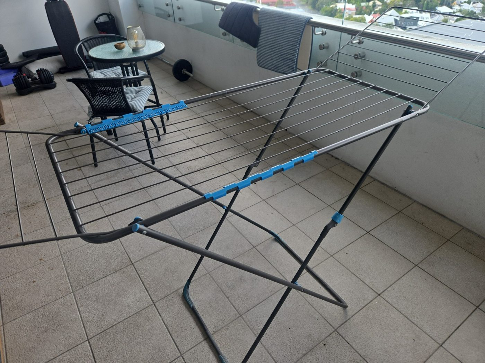
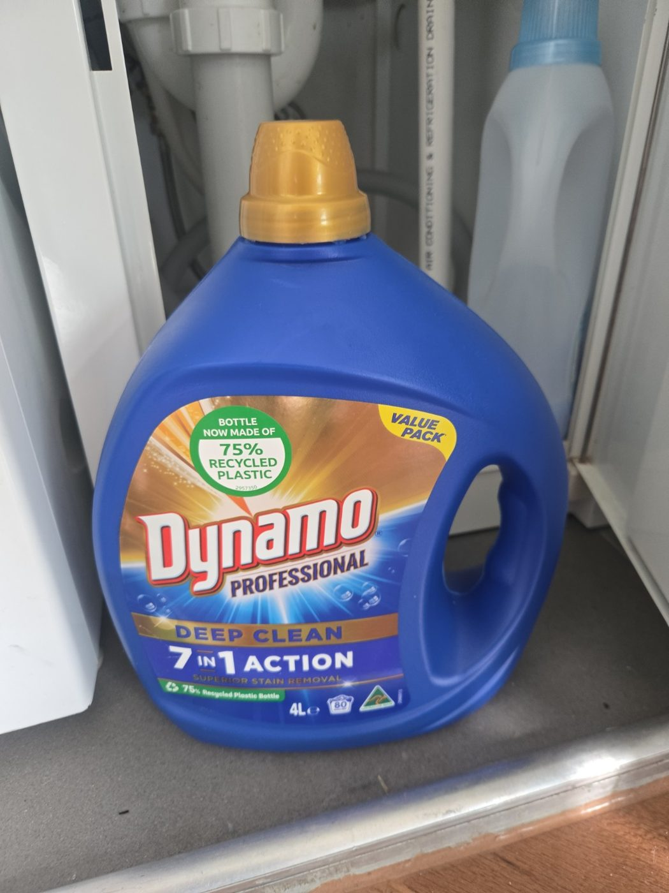
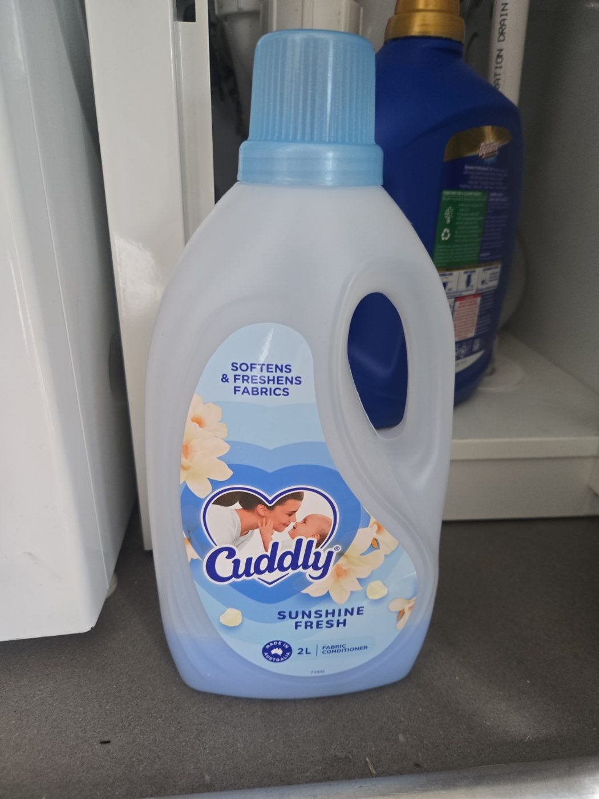
Drying Rack
The drying rack is stored to the left of the washing machine. Use it as your default — the dryer is for when time or weather doesn't allow air drying.
Washing Machine – Estimated Costs
| Scenario | Estimated Cost |
|---|---|
| Electricity + water (Mix setting → Cottons + Prewash) | Up to ~$1.10/wash |
| With detergent + fabric softener | Up to ~$1.40–$1.60/wash |
| 3 residents × up to 2 washes/week × 52 weeks | Up to ~$500/year |
Dryer – Estimated Costs
| Setting | Duration | Estimated Cost |
|---|---|---|
| Cupboard Dry | ~3 hrs 14 min | ~$0.60/load |
| Cupboard Extra Dry | ~4 hrs 14 min | ~$0.80/load |
| 312 loads/year (upper estimate) | — | Up to ~$250/year |
Cleaning the Lint Filter (Required After Every Load)
- Open the dryer door.
- Remove the lint filter from the bottom of the door opening.
- Peel off the lint and dispose of it in the bin.
- Reinstall the filter before the next use.
- Never run the dryer without the lint filter installed.
How Long Can Washing Sit Wet?
| Time | Outcome |
|---|---|
| 0–4 hours | Usually fine |
| 8–12 hours | Musty smell may develop |
| 12–24 hours | Often needs rewashing |
| 24+ hours | Rewash before drying |
Laundry Products
Dynamo Professional Deep Clean 7-in-1
- Small load: ~35 mL — approx. $0.20–$0.30
- Medium load: ~50 mL — approx. $0.25–$0.35
- Large / heavily soiled load: 65–75 mL — approx. $0.30–$0.40
Cuddly Fabric Softener
- Normal load: 25–35 mL — approx. $0.05–$0.10
- Large load: 40–50 mL — approx. $0.10–$0.15
Dishwasher, Detergent & Rinse Aid
Only run when full – otherwise use the sink
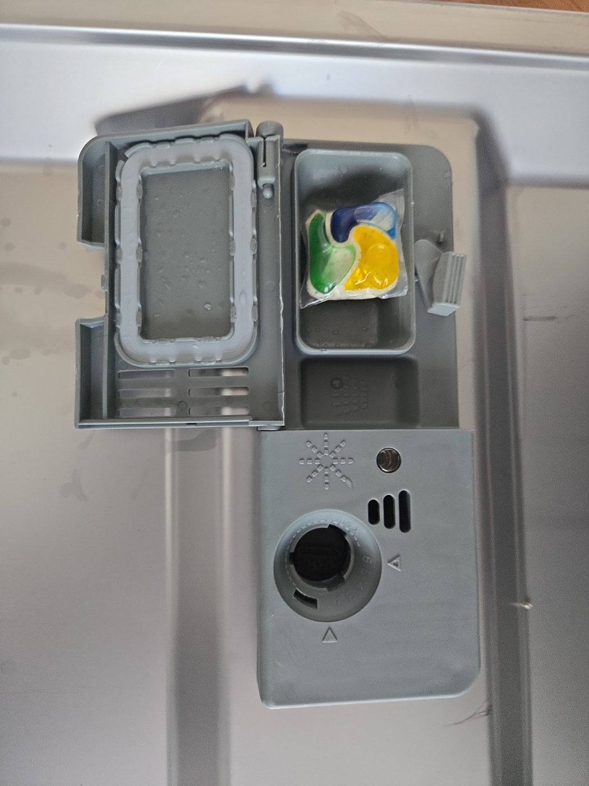
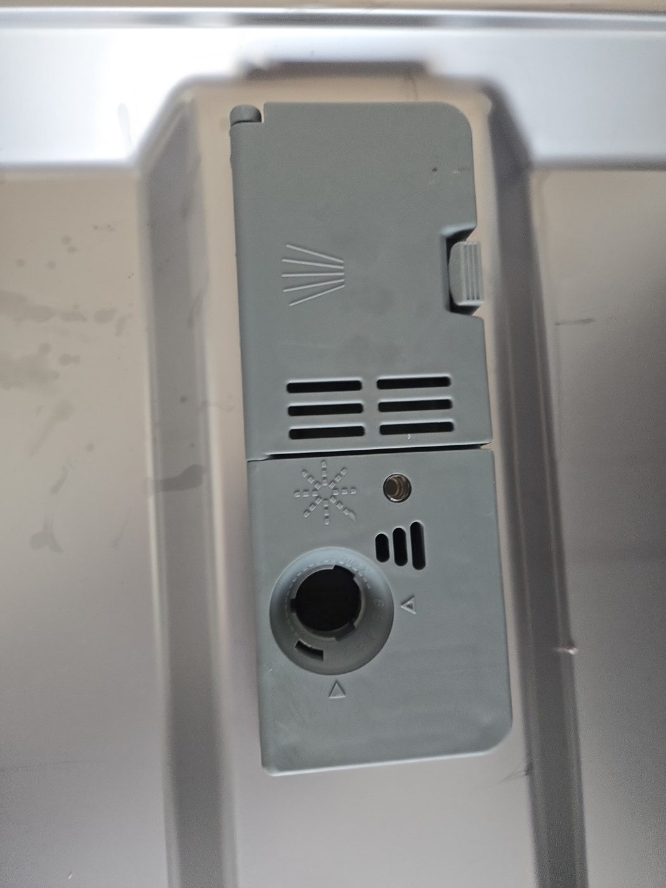
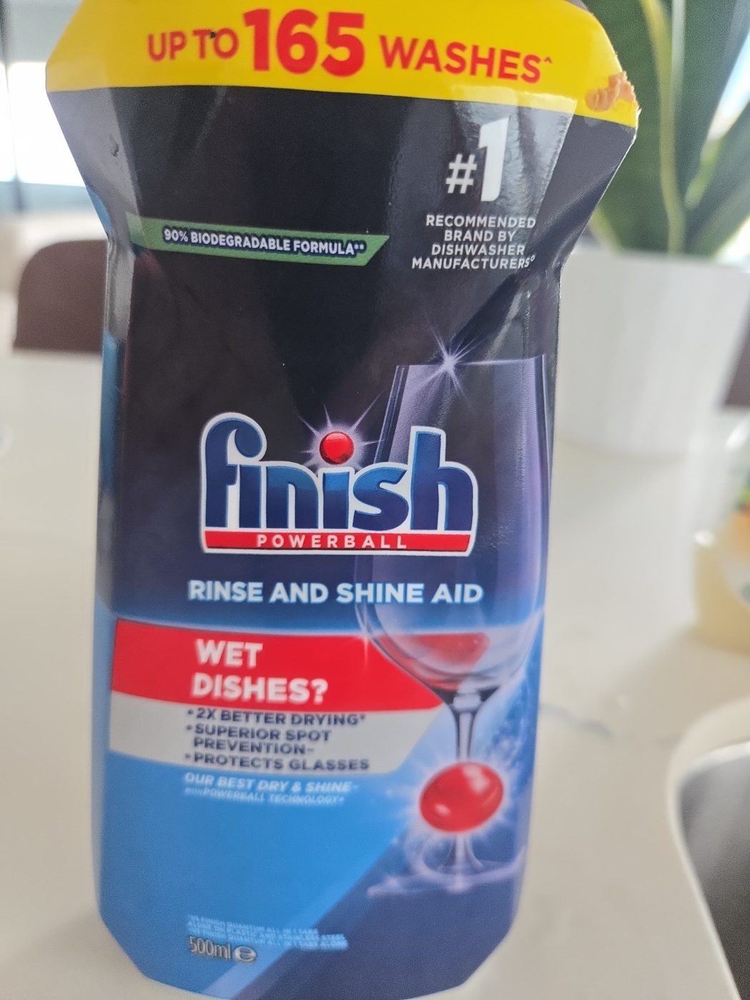
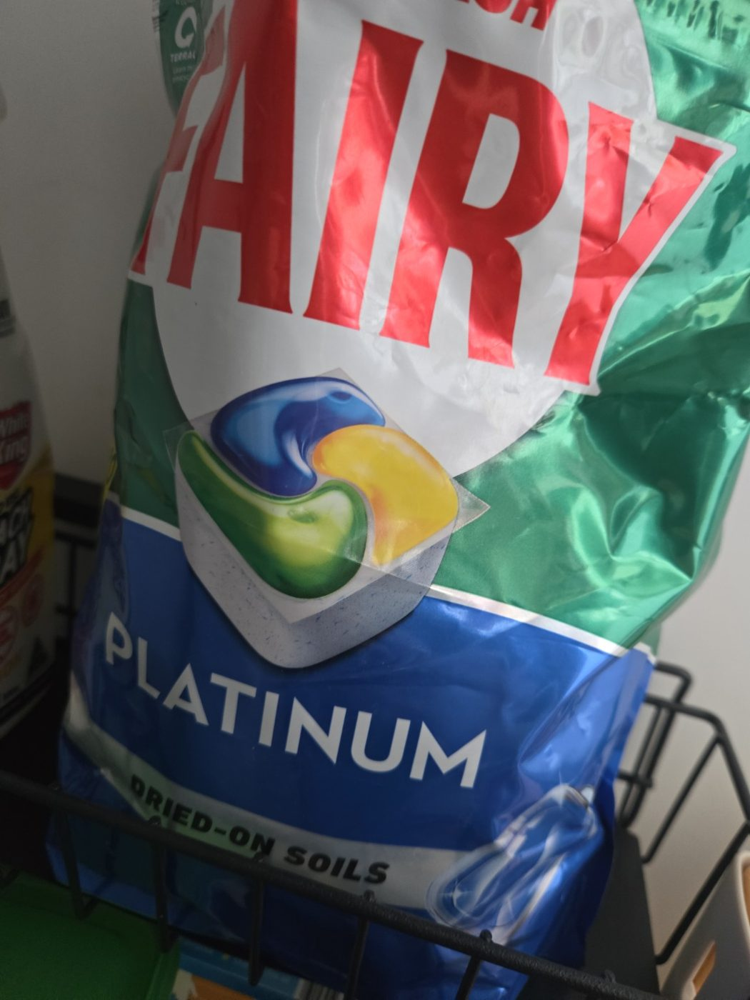
Running Costs
| Load | Cycle | Estimated Cost (incl. electricity, water, hot water) |
|---|---|---|
| Half load | ~3 hours | ~$0.62/wash |
| Full load | ~3 hours | ~$0.82/wash |
| Weekly (1 half + 1 full) × 52 weeks | — | ~$75/year |
Detergent Choice
| Product | When to Use | Cost/wash |
|---|---|---|
| Earth Choice Dishwasher Powder | Everyday, light-to-normal loads | ~$0.07–$0.12 |
| Fairy Platinum Tablet | Greasy or heavily soiled loads | ~$0.35–$0.55 |
Rinse Aid
Use Finish Rinse & Shine Aid in the rinse-aid compartment. Top up when the low indicator appears. Cost: ~$0.02–$0.04 per wash.
Loading Standards
- Scrape all food scraps into the bin before loading.
- Do not overload the racks — leave space for water to circulate.
- Unload and put dishes away promptly once the cycle finishes.
Microwave
Safe use and immediate clean-up
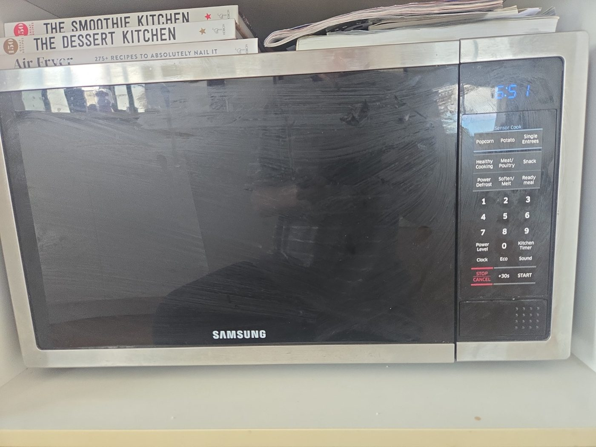
- Use microwave-safe containers only — no metal, foil, cutlery or metallic trim.
- Cover food to prevent splatter.
- Remove food promptly after heating.
- If food spills or splatters inside, wipe it immediately.
- Do not spray cleaner directly inside the microwave — spray onto a cloth first.
Air Fryer – DeLonghi Ideal Fry
Clean after every use — especially greasy foods


After Normal Use
- Unplug and allow to cool completely.
- Remove food crumbs and residue.
- Wash removable components in warm soapy water.
- Dry thoroughly before reassembling.
- Wipe inside and outside with a damp cloth.
After Greasy Foods / Heavy Use
- Remove all removable parts.
- Wash with hot water and dishwashing liquid.
- Use a non-abrasive sponge for baked-on grease.
- Wipe basket edges, lid surrounds, heating element area and interior walls.
- Do not leave grease build-up — clean before the next person uses it.
Toaster & Fridge
Safe use and surface care
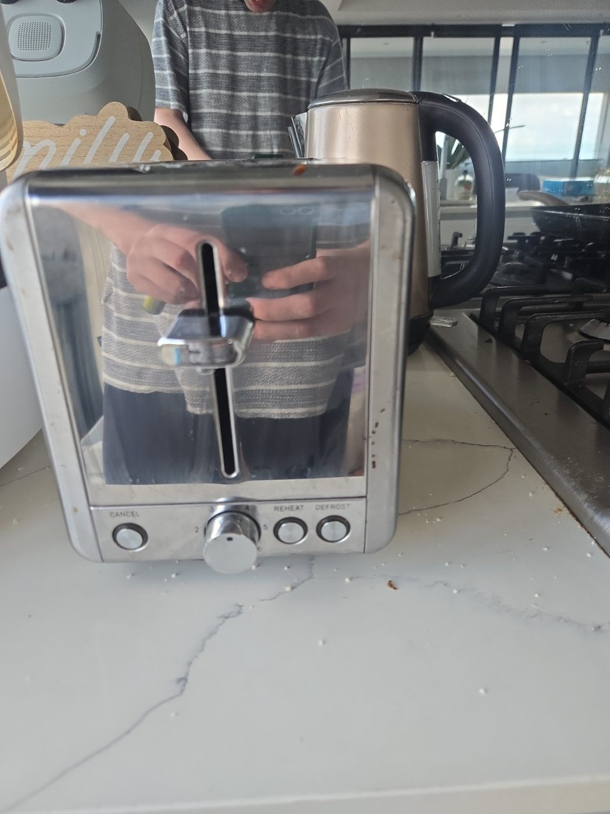
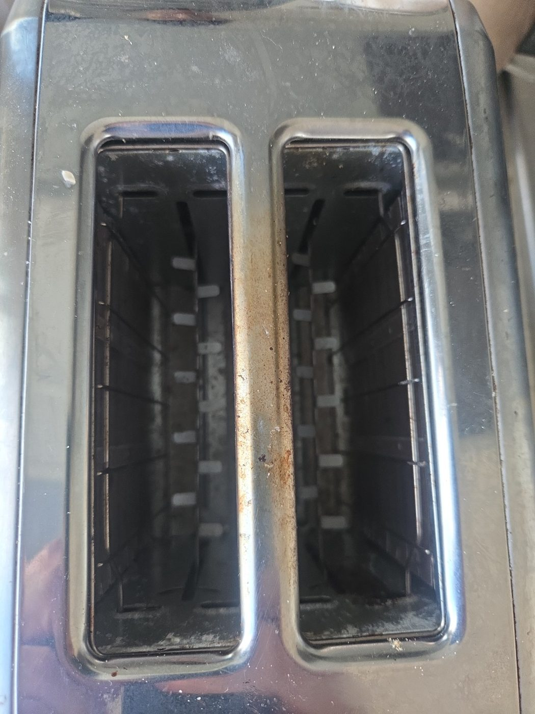

Toaster
Settings: Browning dial 1–2 light, 3–4 medium, 5–6 dark. Use Cancel to stop early, Reheat for already-toasted bread, Defrost for frozen bread.
Safety: Never insert metal objects. Unplug before cleaning.
Cleaning the Toaster
- Switch off at the wall and unplug.
- Allow to cool fully.
- Remove and empty the crumb tray into the bin.
- Shake loose crumbs into the bin.
- Wipe the outside and wipe down the bench.
Fridge – Stainless Steel Care
- Use stainless steel cleaner or stainless steel wipes (to purchase — see shopping list).
- Spray product onto a cloth — not directly onto the fridge.
- Wipe with the grain of the steel, not against it.
- Buff dry with a clean microfibre cloth.
- Do not use steel wool, bleach, abrasive pads or harsh chemicals.
Cleaning Products & Where to Use Them
Right product for the right surface — always
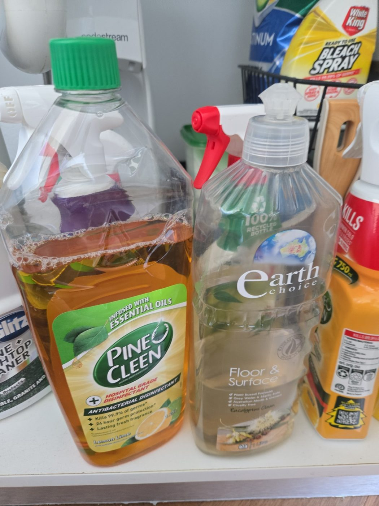
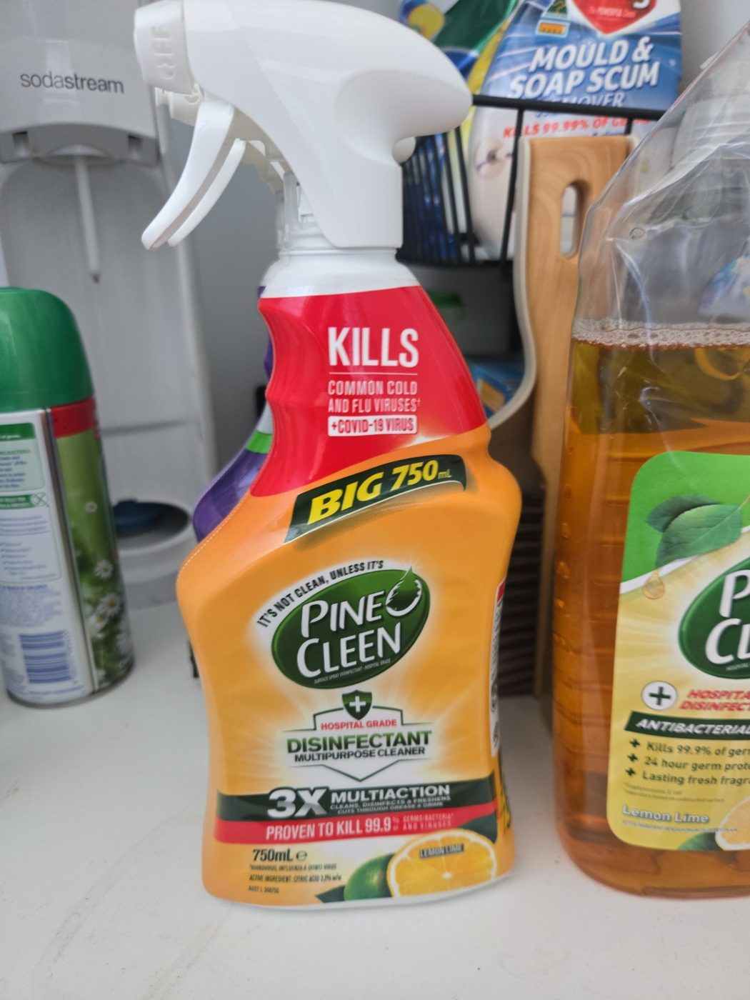
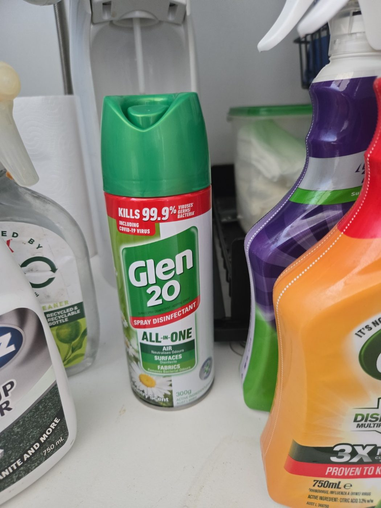
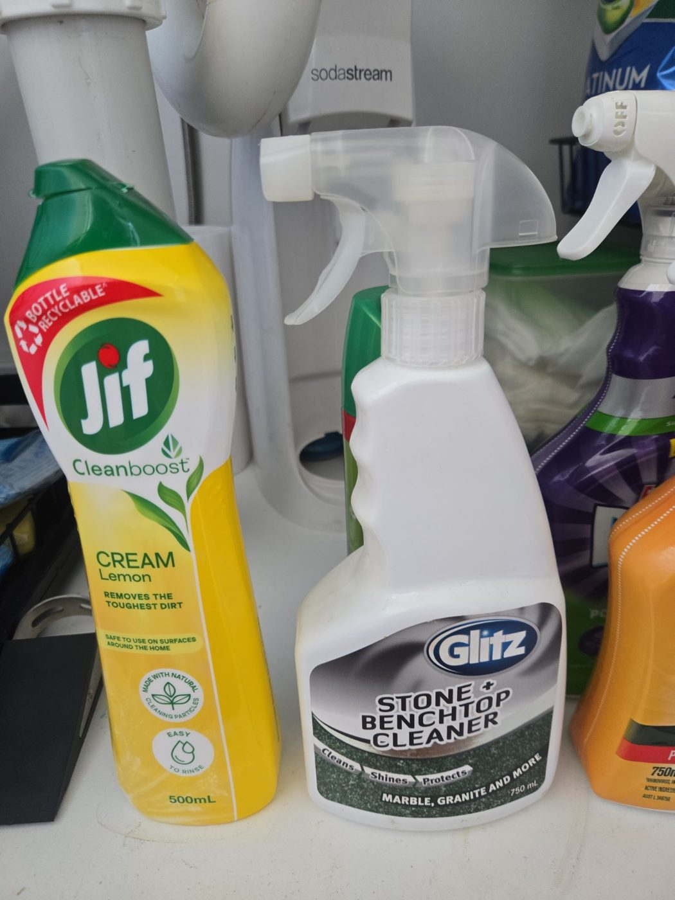
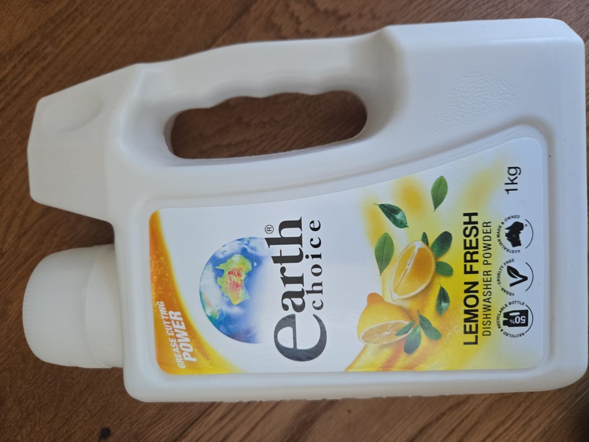
| Product | Use On | Do Not Use On |
|---|---|---|
| Earth Choice Floor & Surface | Herringbone timber floors, kitchen floor, general mopping | Do not leave timber wet |
| Pine O Cleen Floor Cleaner | Bathroom floors, toilet area, balcony, disinfecting | Do not use regularly on timber |
| Pine O Cleen Spray | High-touch surfaces, handles, light switches, bathroom surfaces | Stone or timber (test first) |
| Glen 20 | Germs and bad odours, bins, after illness, light fabric odour control | Do not soak surfaces |
| Jif Cream | Stubborn marks, sink stains, basin, shower soap scum | Stainless fridge, timber, stone benches |
| Glitz Stone + Benchtop Cleaner | Kitchen island, stone/marble/granite benchtops | Do not use abrasive pads |
| Ajax Glass Cleaner | Dining table, glass surfaces, mirrors | Timber floors |
Consumable Cost Guide
| Item | Approx. Cost Per Use |
|---|---|
| Earth Choice Floor Cleaner | $0.05–$0.10 |
| Pine O Cleen Floor Mix | $0.10–$0.20 |
| Glen 20 | $0.05–$0.15 |
| Glitz Stone Benchtop Cleaner | $0.05–$0.10 |
| Jif Cream | $0.05–$0.15 |
| Earth Choice dishwasher powder | $0.07–$0.12/wash |
| Fairy Platinum tablet | $0.35–$0.55/wash |
| Finish rinse aid | $0.02–$0.04/wash |
| Kitchen bin bag | $0.15–$0.30 each |
| Bathroom bin bag | $0.05–$0.10 each |
| Sponge/scourer | $0.10–$0.30 (depending on lifespan) |
Floor Cleaning Guidelines
Timber and bathroom floors
Herringbone Timber Flooring
- Vacuum or use the robot vacuum regularly.
- Mop with Earth Choice Floor & Surface diluted with water — use a barely damp mop only.
- Never leave standing water on timber.
- No steam mop, bleach, harsh degreasers or excessive water.
- Dry any wet patches immediately.
Bathroom Floors
- Use diluted Pine O Cleen for disinfecting.
- Mop around the toilet base, vanity and corners.
- Allow to dry fully before use.
Cleaning Cloths & Tea Towels
Which cloth to use where, and how to care for them

- Blue cleaning cloths: benches, appliances and general wipe-downs.
- Black microfibre cloths: drying, polishing, glass and stainless steel.
- Never leave damp cloths screwed up on benches or in the sink.
- Wash greasy cloths promptly — warm wash 40–60°C, regular detergent, no fabric softener.
- Ensure cloths are fully dry before returning to the cupboard.
Powder Room / Guest Bathroom
Shared responsibility — after each use and weekly

After Every Use
- Rinse toothpaste, soap residue and hair from the basin.
- Check the toilet bowl and use the brush if needed.
- Hang towels neatly — never leave towels on the floor.
- Place rubbish in the bin.
Weekly Clean (15–20 minutes)
- Clear all surfaces.
- Clean the vanity and basin with an appropriate cleaner.
- Clean the mirror with glass cleaner.
- Clean the toilet seat, lid, cistern, outside bowl, flush button and base.
- Scrub the bowl with the toilet brush.
- Clean and disinfect the toilet brush holder.
- Empty the bin, replace the liner, spray with Glen 20 if needed.
- Vacuum then mop the floor, including behind and around the toilet.
- Check the floor drain for hair and dirt.
- Wipe cupboard fronts, handles, light switches and door handles.
Schedule Summary
| Frequency | Time | Tasks |
|---|---|---|
| Daily | ~2 min | Check toilet, wipe basin, pick up hair, empty bin if full |
| Weekly | ~15–20 min | Full clean as per steps above |
| Monthly | ~30–45 min | Wash bath mat, clean cupboard interiors, tiles and vent |
Balcony Cleaning & Plants
Shared responsibility for cleanliness and plant care
Current Tiles – Maintenance
- Sweep plant debris, leaves, soil and dirt regularly.
- Use a dustpan and broom — do not leave swept-up dirt in piles.
- Place plant debris into a garbage bag or waste box and empty regularly.
- Do not bring wet or leaking plant waste through the apartment — drain it first.
- Do not sweep debris over the balcony edge.
Future White Porcelain Tiles
- Sweep weekly.
- Spot-clean soil, fertiliser and pot marks quickly.
- Mop monthly with warm water and a mild cleaner.
- Always lift heavy pots — never drag them across the tiles.
- Keep pot trays clean and check for water staining.
Plant Watering Guide
Most balcony plants are succulents, cacti or drought-tolerant varieties — avoid overwatering.
| Season | Frequency (if no rain) |
|---|---|
| Summer | 2–3 times per week |
| Spring / Autumn | 1–2 times per week |
| Winter | Every 1–2 weeks |
Robot Vacuum & Mop – Ecovacs DEEBOT X Series
Prepare the floor before each run
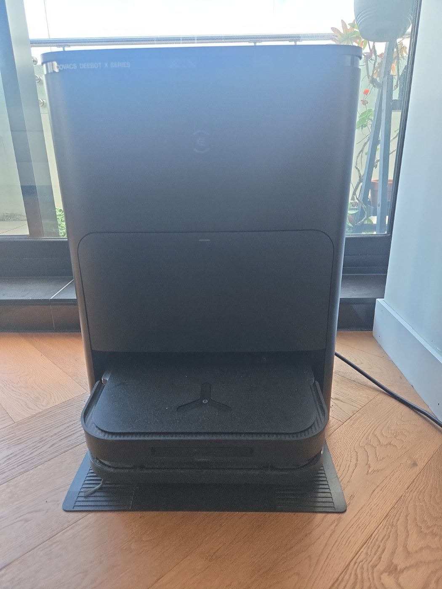
- Before starting: pick up cables, chargers, clothing and small objects.
- Do not leave wet towels or rubbish on the floor.
- Fill the clean water tank with fresh tap water only (or Ecovacs-approved solution).
- Empty the dirty water tank into the sink or toilet, rinse, and reinstall.
- Replace the dust bag every 1–3 months depending on use.
- Regularly check brushes, mop pads and filters.
Consumables Replacement Guide
| Item | Replace Every |
|---|---|
| Dust bag | 1–3 months |
| Main brush | 6–12 months |
| Side brushes | 3–6 months |
| Mop pads | 3–6 months |
| HEPA filter | 3–6 months |
Shark Vacuum Cleaner
Charging, emptying and care
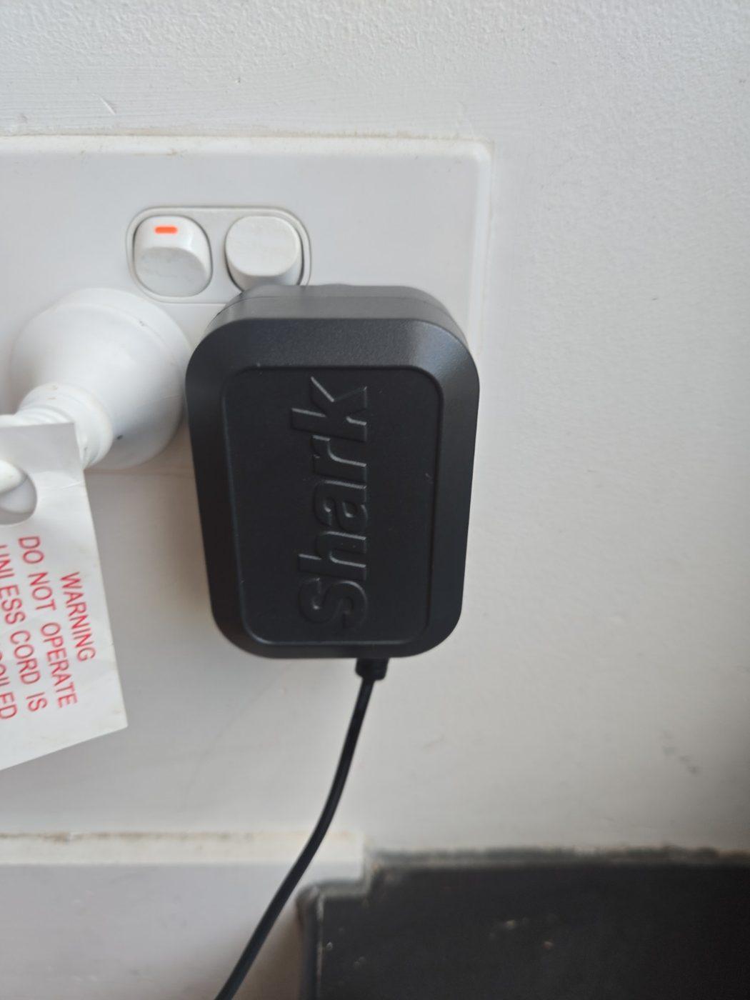
- If battery is flat, connect to the genuine Shark charger — allow ~3.5–4 hours from empty.
- Use only the genuine Shark charger (no substitutes).
- Empty the dust container when full.
- Remove any hair or string wrapped around the brush roll.
- Return all attachments neatly to their storage position.
Blankets & Throws
Available for use — return clean and folded
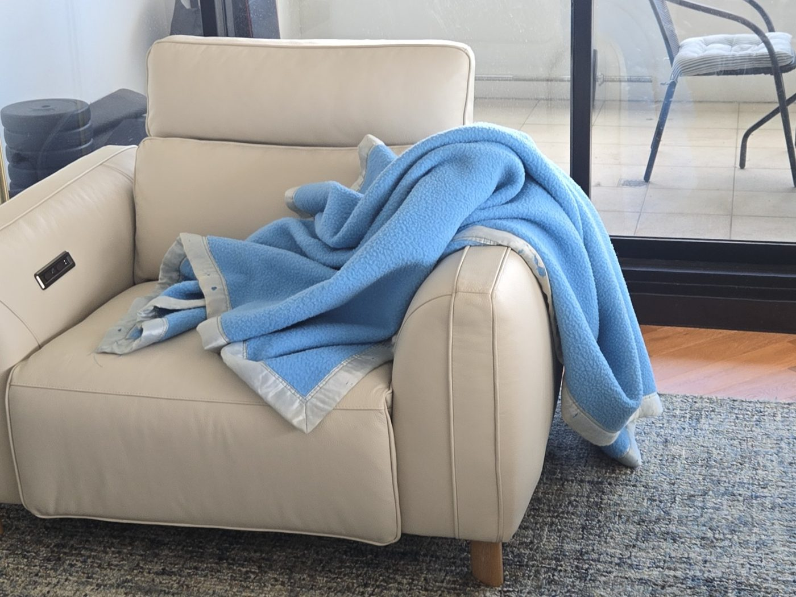
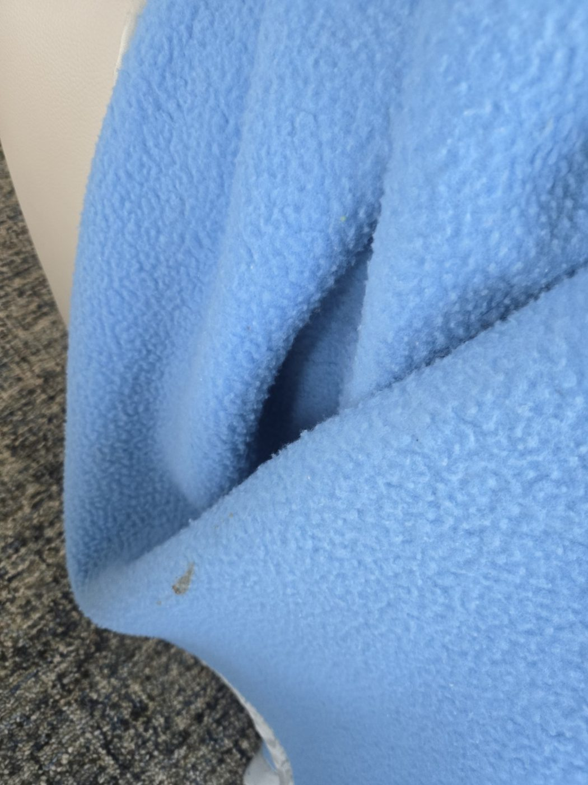
- Blankets and throws are available while relaxing or watching TV.
- If stained, soiled, or with food spills or body oils — wash promptly.
- Wash on a gentle/mixed cycle and air dry where practical.
- Fold neatly and return to the cupboard after use.
- Do not leave blankets draped over furniture for extended periods.
Linen & Communications Cupboard
Clean items only — do not disturb networking equipment
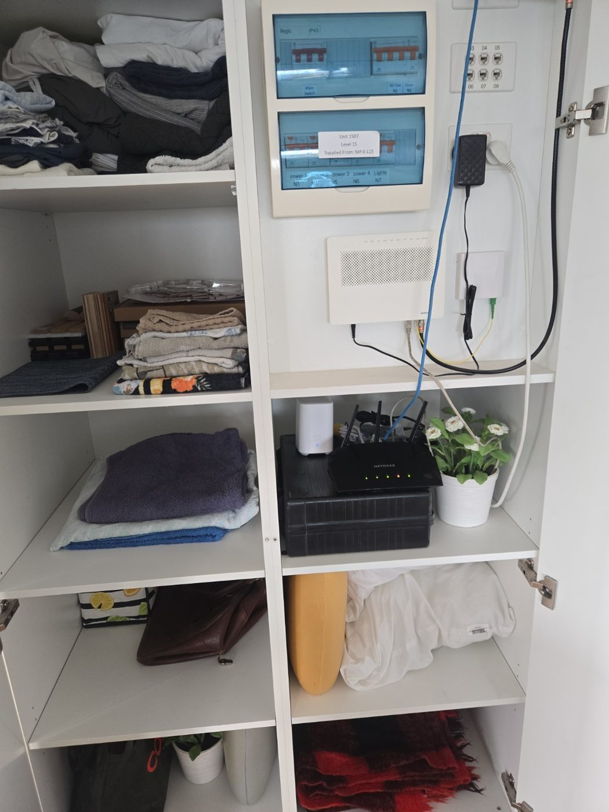
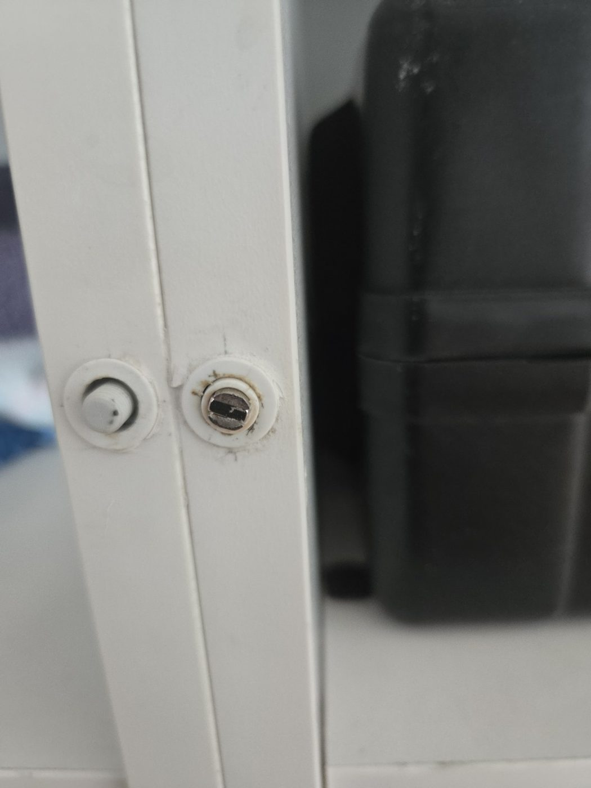
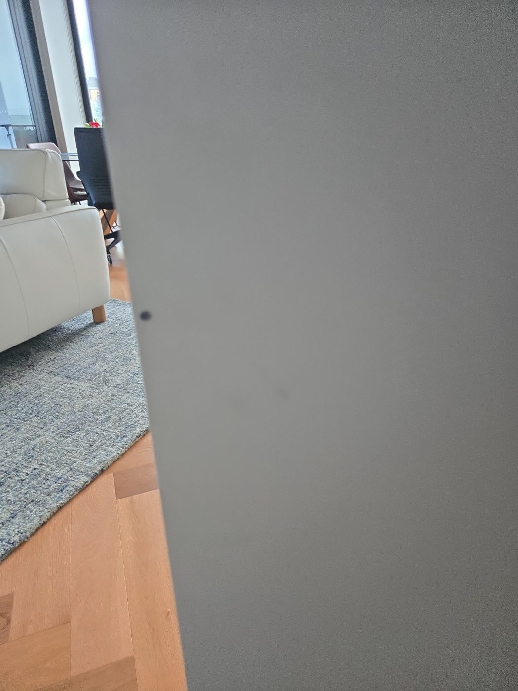
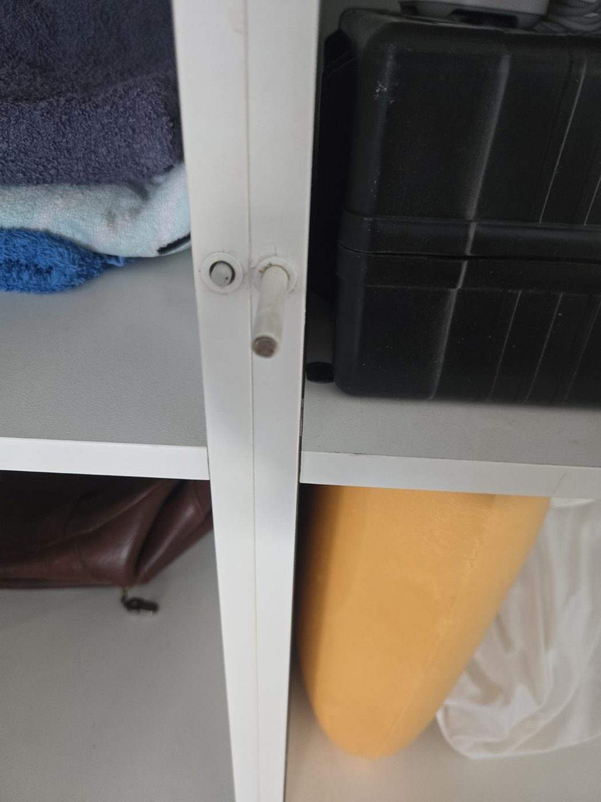
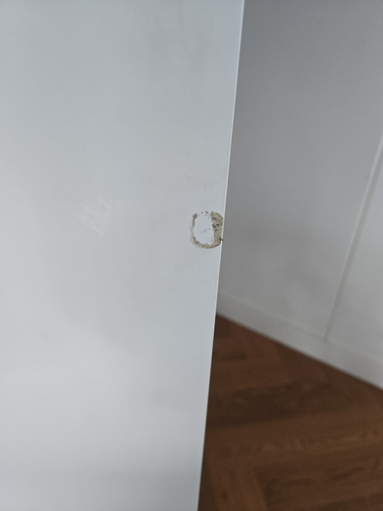
This cupboard contains clean towels, blankets, linen, the NBN/router, networking equipment and the electrical switchboard.
- Only clean, fully dry towels and blankets belong in this cupboard.
- Do not store damp towels or dirty cleaning cloths here.
- Keep the router, NBN equipment and power supplies clear — they need airflow.
- Do not unplug any networking or electrical equipment unless specifically instructed.
Door Closer Repair – Peter to Fix
The existing hardware appears to be a failed push-to-open latch and magnetic catch.
What to Buy (Bunnings / Mitre 10)
- 2× white push-to-open cabinet latches (Hafele / Kaboodle / Hettich style)
- 2× white magnetic cabinet catches with metal strike plates
- Small screws (if not included)
Search for: push open cabinet latch · push to open cupboard latch · magnetic cabinet catch · Hafele push latch
Installation Steps
- Remove the broken latch and magnetic catch.
- Use existing screw holes where possible.
- Install the new push latch in the same position.
- Close the door gently and mark where the plunger meets the door frame.
- Install the strike plate at that contact point.
- Adjust until the door closes flush and pops open when pushed.
Miscellaneous Items
Floor lamp, ice trays, appliance manuals and router
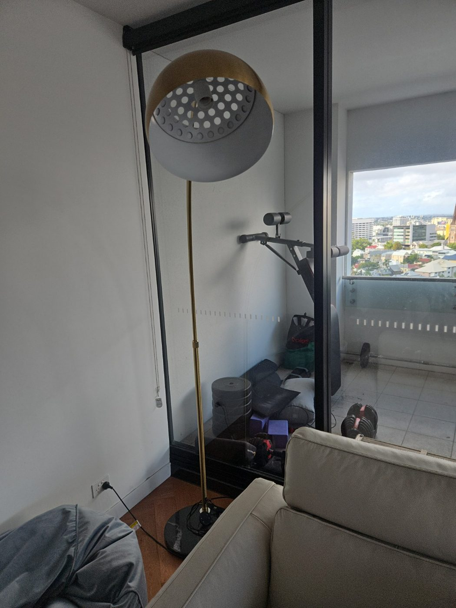
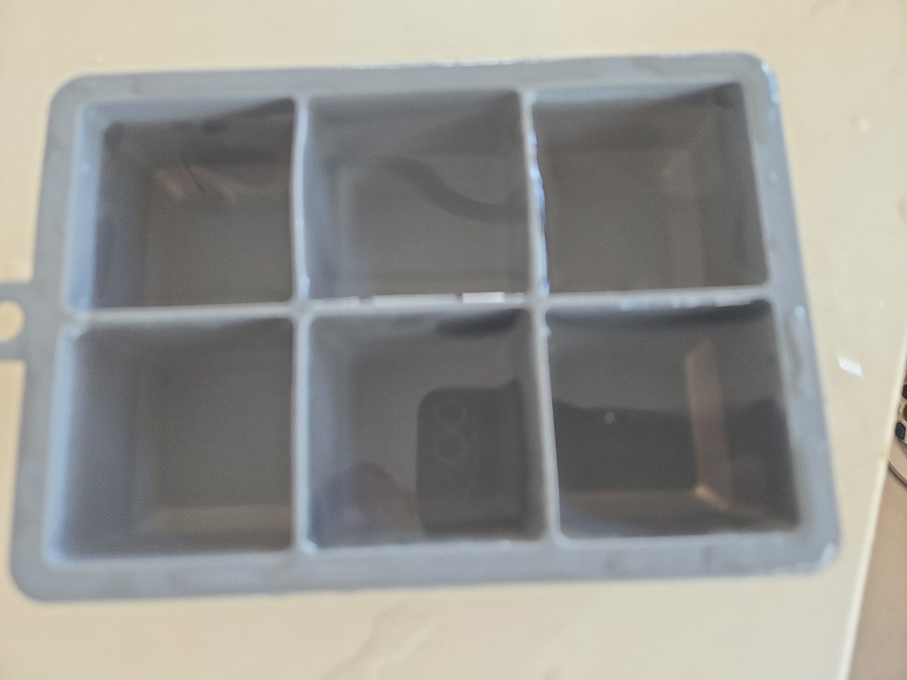
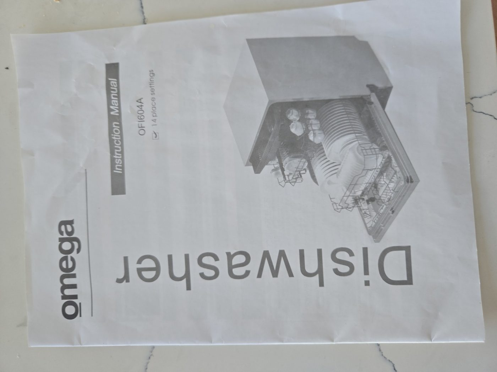
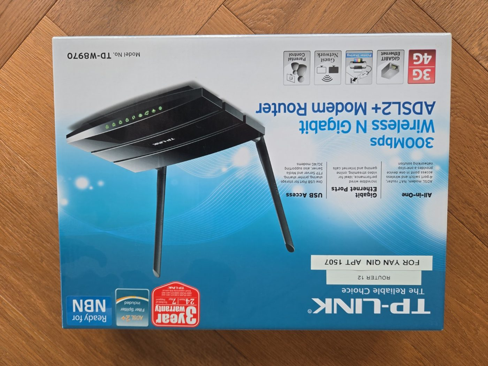
Gold Floor Lamp
- Plug into wall power and use the foot switch on the cord.
- Keep the base flat on the floor and the cord clear of walkways.
- Do not hang clothing, towels or items on the lamp.
- Move the lamp using the pole and base — never the shade.
- Replacement bulb: warm white LED 2700K–3000K, likely E27 Edison Screw, 8–12W.
- If the lamp flickers, heats unusually or feels unstable, report it immediately.
Ice Trays
- If you use the last ice cube, refill the tray immediately.
- Fill compartments 80–90% full and return flat to the freezer.
- Allow 4–8 hours to freeze fully.
Appliance Manuals
Instruction manuals are stored in the balcony-side bottom drawer in the kitchen. Refer to manuals if unsure about any appliance. Return manuals to the drawer after use.
TP-Link TD-W8970 Router – For Sale
This unit is available for sale. Realistic resale values:
- Facebook Marketplace / Gumtree: list $20, expect $10–$15
- eBay: list $25–$35, expect $15–$25 plus postage
Shopping List
Items that need to be purchased or restocked